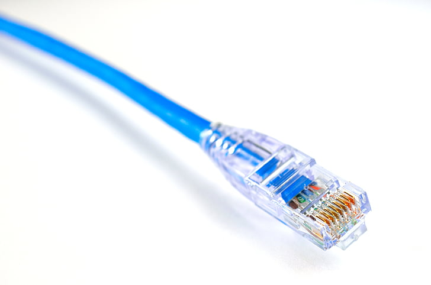
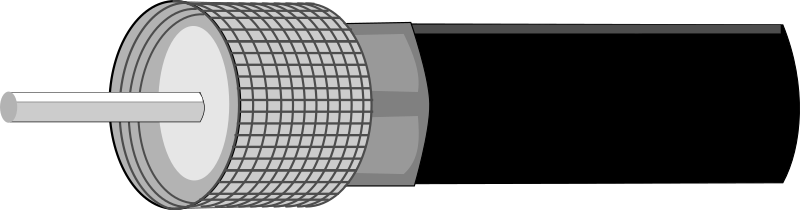
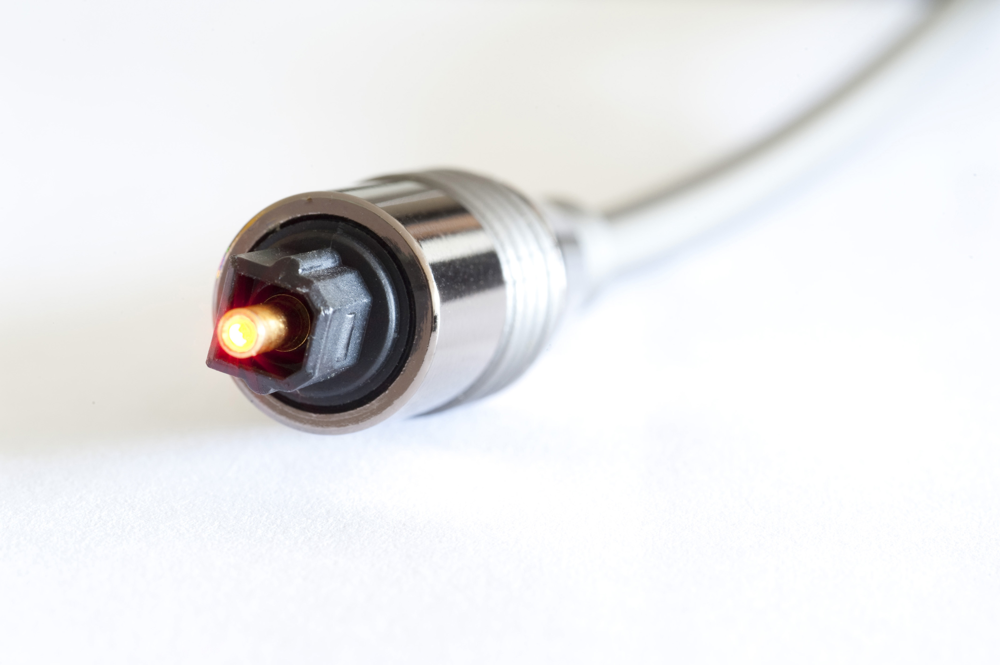

Purpose: Used to connect devices in a Local Area Network (LAN), like computers, routers, and switches.
Structure: Made of twisted pairs of copper wires, typically 4 pairs (8 wires total), enclosed in a plastic jacket.
Connector: RJ45 plug.
Common Types: Cat5, Cat5e, Cat6 higher numbers support faster speeds and better shielding.
Use Case: Ideal for stable, high-speed internet in homes, offices, and data centers.
📷 Ethernet Cable Image: Here are some examples of Ethernet cables.

Purpose: Transmits high-frequency electrical signals, commonly used for cable TV, internet, and CCTV.
Structure: Central copper conductor, surrounded by insulating material, metallic shield (braid or foil), and outer plastic jacket.
Connector: BNC, F-type, or SMA connectors.
Use Case: Great for video and broadband signals with moderate bandwidth.
📷 Coaxial Cable Image: Here are examples of coaxial cables.

Purpose: Transmits data as light pulses, enabling ultra-fast and long-distance communication.
Structure: Glass or plastic core surrounded by cladding (for light reflection), buffer coating, and protective jacket.
Connector: SC, LC, ST, or MTP connectors.
Types: Single-mode (long distance, narrow core) and multimode (shorter distance, wider core).
Use Case: Used in backbone networks, ISPs, and high-speed internet infrastructure.
📷 Fiber Optic Cable Image: Here are examples of fiber optic cables.

(Left to Right, Clip Facing Away)
| Pin | Wire Color |
|---|---|
| 1 | White/Orange |
| 2 | Orange |
| 3 | White/Green |
| 4 | Blue |
| 5 | White/Blue |
| 6 | Green |
| 7 | White/Brown |
| 8 | Brown |
An IP address is a unique identifier assigned to each device on a network. In IPv4, it’s written as four decimal numbers separated by dots (e.g., 192.168.1.1), with each number ranging from 0 to 255. These numbers represent 32 bits, divided into network and host portions.
| Class | Range of First Octet | Default Subnet Mask | Purpose | Hosts per Network |
|---|---|---|---|---|
| A | 1 – 126 | 255.0.0.0 | Very large networks | ~16 million |
| B | 128 – 191 | 255.255.0.0 | Medium-sized networks | ~65,000 |
| C | 192 – 223 | 255.255.255.0 | Small networks (LANs) | 254 |
| D | 224 – 239 | N/A | Multicast (special group traffic) | N/A |
| E | 240 – 254 | N/A | Reserved for research/testing | N/A |
First octet: 1–126
Used for very large organizations or ISPs.
Example: 10.0.0.1 (also a private IP)
First octet: 128–191
Used by universities, corporations, and medium networks.
Example: 172.16.0.1 (private IP range)
First octet: 192–223
Common for home and small business networks.
Example: 192.168.1.1 (private IP)
First octet: 224–239
Used for multicast—sending data to multiple devices simultaneously.
First octet: 240–254
Reserved for experimental and future use.
Private IPs are used inside local networks and are not routable on the internet.
Common private ranges:
1-https://www.pickpik.com/ethernet-data-internet-network-computer-connection-137434
2-https://openclipart.org/detail/306621/coaxial-connector-male
3-http://www.freeimageslive.co.uk/free_stock_image/fibre-optic-cable-jpg